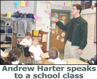
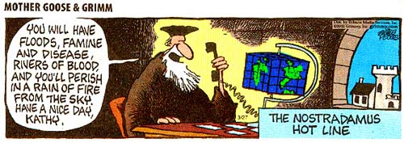
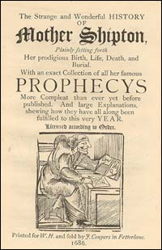

El ilustrador Scott Kurtz, quien contribuye en la página de “juegos” en http://www.pvponline.com, publicó la tira cómica que ven aquí, el primero de abril. Su personaje, Skull el Troll, es una criatura ingenua que tiende a aceptar y a creer en lo que sea. ¿Dónde he visto yo características similares?…Otro personaje, Brent Sienna, reconoce a Edward como el fraude que es y trata de mostrarle a Skull lo frívolo que es el espectáculo de Edward.
Se suponía que Kurtz sólo iba a crear una de estas tiras cómicas para publicarlas el primero de abril. Sin embargo, los comentarios que recibió de los ofendidos seguidores de Edward fueron tan pesados y fuertes que ha decidido publicar sobre el mismo tema por toda una semana - y me va a incluir en el último episodio. Él nos ha permitido, amablemente, que publiquemos las tiras aquí, así que las presentaré una por semana en la página de JREF, comenzando ahora. Creo que Scott - y Brent - han descrito muy bien la actuación de Edward…
Brent - ¿Qué estás mirando, Skull?
Skull - Se llama “Crossing Over con John Edward”. Él es un psíquico que reúne a gente de su audiencia con sus seres queridos que han muerto.
Edward - Estoy sintiendo a alguien que una vez tuvo un trabajo o que conoció a alguien con un trabajo. ¿Alguien así? Alguien que coma comida y duerma en una cama…Es posible que se trate de un hombre o una mujer.
Edward - Alguien que tenía el cabello largo o quizás corto.
Skull - “Asombro por parte de Skull”. Mi papá tenía el cabello corto y comía comida.
Brent - ¿Cómo es que lo hace?
Skull - Es psíquico.
Edward - Estoy sintiendo a alguien que tiene letras en su nombre…
Nuestro lector Simon Nicholson, en Gran Bretaña, comparte con nosotros esta entretenida e instructiva historia…
Un amigo encontró un programa de horóscopos - creo que lo bajó del internet. La idea es que al escribir la fecha de nacimiento, el programa genera un perfil de tu personalidad junto con algunas predicciones sobre lo que te ocurrirá la semana siguiente o concerniente a la salud, el dinero y el amor. Ella imprimió copias para todos sus amigos y familiares, yo incluído.
La reacción de la mayoría de las personas era lamentablemente predecible; todos se maravillaban con la certeza que mostraba el programa con sus perfiles, “Oh, esa soy yo de la A a la Z”, etc. etc., lo mismo con las predicciones. En vano intenté apuntar la naturaleza genérica de los textos, el hecho de que las personas no son tan únicas como piensan y el estilo ambiguo de las predicciones. Pero me ganó la mayoría. El consenso proclamaba que debía haber algo en la astrología y, qué iba a saber yo si sólo soy un graduado en astronomía.
Pero tuvieron que retractarse unos días después cuando mi amiga se dio cuenta que el programa en cuestión era de origen americano por lo tanto la fecha para la que está programado es de un formato diferente a la que usamos los británicos - el día y el mes se ponen al revés. En otras palabras, los perfiles y las predicciones que nos había repartido, los mismos que todos encontraron tan aptos y certeros, ¡no pertenecían a sus cumpleaños para nada! Alguien nacido el 11 de febrero obtuvo el horóscopo de alguien nacido el dos de noviembre y ¡así por el estilo! El hecho de que toda la baba astrológica estaba basada en una fecha de nacimiento completamente diferente no cambió para nada el significado que fue “¡percibido!”
¿Por qué no estamos sorprendidos? ¡Gracias, Simon!
Philip Sadler, director del Departamento de Educación Científica en el Centro de Astrofísica Smithsonian de Harvard (CfA) en Cambridge, MA, ha informado al público sobre un evento que estamos seguros, sacará a todos los locos a la calle para predicar, nuevamente, otro final del mundo.
La noche del 5 de mayo, los planetas brillantes, Marte, Saturno y Venus se agruparán para formar un perfecto triángulo equilátero en el cielo occidental. Este fantástico espectáculo visual será visible casi desde cualquier lugar en la Tierra y, en el Medio Oriente, nos dice Sadler, este arreglo piramidal colgará directamente “sobre” Belén; obviamente, hay que saber elegir la hora correcta.
Más tarde, el 10 de mayo, Marte y Venus parecerán estar tan cerca una de la otra, si observamos sin ayuda de telescopios o binoculares, que se convertirán en una sola. Ambas configuraciones, por supuesto, son en realidad ilusiones creadas por nuestro punto de vista terrenal ya que los planetas sólo estarán alineados en ese sentido, para nada más cercanos el uno al otro de lo que han estado siempre.
Curiosamente, dice el señor Sadler, esta misma agrupación de planetas pudo haber capturado la atención de los reyes bíblicos, hace más de dos mil años, porque el primero de abril, en el año 2 antes de Cristo, esos mismos tres planetas se unieron para formar un triángulo equilátero sobre la ciudad de Belén - igual que sobre cualquier otro pueblo y villa por todo el mundo.
(Estoy un poco molesto con el comentario del señor Sadler argumentando que cualquier configuración puede estar “sobre” un punto específico sobre la Tierra. Las estrellas y los planetas se encuentran “sobre” todos los lugares en la Tierra dentro de una ancha banda de latitud y, los agrupamientos que él especifica no son fenómenos relativamente cortos como los eclipses, por lo que serán vistos de la misma forma por toda la Tierra. Sus declaraciones son ciertamente correctas pero no exclusivas. Sólo un punto que quería comentar).
Nada como esto ocurrirá nuevamente en nuestras vidas, a menos que seamos secoyas o alguna otra forma longeva de vida. El señor Sadler sugiere que, por lo menos, esto presenta una maravillosa oportunidad para que los amigos y los familiares se junten a compartir una experiencia que va más allá de los eventos rutinarios. Una oportunidad para ponderar sobre nuestra frágil existencia sobre el Punto Azul Pálido de Carl Sagan, corriendo alrededor de una estrella amarilla bastante ordinaria en compañía de otros ocho compañeros planetarios. Quizás pueda ayudarnos, sólo un poquitito, a evaluar nuestro propio mundo.
Inténtenlo. Les gustará.
El equipo de Ian Erik Morris y Roger Christian Zollo, ha
contribuido anteriormente con SWIFT. Nos alegra tenerlos de vuelta y
esta vez han estado hurgando en la historia para descubrir
ilustraciones que demuestren que los poderosos y los pertenecientes
a la clase alta también mantenían creencias que quizás asumíamos
sólo se encontraban en las “clases más bajas”.
Nada nuevo: el crédulo Frederick III
Hasta el momento en nuestros ocasionales artículos, nuestros ávidos lectores han visto ejemplos de cómo el deseo de creer en cosas mágicas, que vemos a nuestro alrededor hoy, siempre ha estado con nosotros, en formas diferentes. Hemos discutido ejemplos medievales de gente legendaria, amuletos mágicos y astrología. No piensen que se trataba sólo de campesinos tontos y esposas sospechosas los que eran engañados a creer en estos fraudes. Mucha gente de autoridad también fueron timados con estas tonterías - ¿necesitamos recordarles el gusto de Reagan por las consultas astrológicas? Así como el Presidente Thabo Mbeki de Sudáfrica, el Primer Ministro de Granada, Eric Gairy y el senador Claiborne Pell de Rhode Island, también ha existido gente famosa y poderosa, que debieron haber actuado de forma más inteligente, sin embargo, fueron engañados como tontos; un ejemplo vivo en la historia europea es el caso de Frederick III.
Frederick, el hijo del Duque Ernest de Austria, reinó sobre el Santo Imperio Romano (del que Voltaire comentó era ninguno de los tres) desde 1452 hasta su muerte en 1493 y fue el último emperador jamás coronado en Roma por un Papa. En el momento de su coronación y su ungimiento (o quizás hasta un año antes de que ocurriera), él contrató a un astrónomo adolescente Regiomontanus, (tema de uno de nuestros artículos previos) como su astrólogo personal. Las predicciones de Regiomontanus no ayudaron mucho al ejército de Frederick; el año siguiente los Otomanes tomaron a Constantinopla y siguieron hacia el noroeste y le arrebataron a Frederick las provincias austríacas de Styria y Carinthia. Más tarde, Frederick perdió más de Austria (incluyendo Viena), frente al conquistador húngaro Mattias I Corvinus. El ejercito imperial pudo haber prevenido estas pérdidas pero estaban seriamente en bancarrota. Y ¿hacia dónde se dirigían los fondos del emperador, además de pagarle a un observador de las estrellas?
Uno de los motivos de los gastos era la vasta colección de “santas reliquias” que mantenía Frederick. Mencionamos en un artículo anterior sobre la popularidad de objetos que la gente decía eran milagrosos o de origen bíblico, pero estos objetos era generalmente raros. Los estantes de la basura de colección de la que ostentaba Frederick eran realmente grandes y usualmente disfrutaba exhibirlas en varios lugares de su reino. Decía tener la corona, la espada, la esfera, el bastón y las túnicas de la coronación de Carlo Magno; todas eran seguramente falsas. Junto con éstas, Frederick también proclamaba tener un pedazo de la Verdadera Cruz (todo el que era alguien en esos tiempos decía tener un pedazo de eso) montada en oro en una joya que llamaba la Cruz Imperial. También poseía lo que llamaba la Santa Lanza, aquella que había sido clavada en un costado de Cristo durante la cruxificción; existían muchas de estas Lanzas Santas en esa época. Si se lo pedías de buena forma, Frederick se animaba a enseñarte un hueso del brazo de Santa Ana, el delantal que usó Cristo cuando lavó los pies de los apóstoles, estillas del pesebre en Belén y una pieza del mantel de la Última Cena. Su posesión de esta colección de, presumiblemente, objetos falsos, tenía el objetivo de salvar a Frederick de un largo tiempo en el purgatorio; el estimado más bajo de libertad eran 37 años y 275 días y el más alto eran 230,000 días (629 años y algo de cambio). No nos pregunten qué hizo el hombre para pensar que merecía todo ese tiempo como castigo.
La historia nos cuenta de otros ejemplos de personas con mucho poder que no saben tomar decisiones sabias, una lista muy numerosa para nombrar aquí. Mucha gente piensa que el pensamiento que no es crítico y los reclamos falsos sólo dañan a la persona creyente pero si el creyente tiene la vida de mucha gente bajo su control, todas esas tonterías pueden ser desastrosas.
Y ahora para hablar de un tema totalmente diferente, soy un gran
defensor de la libertad de elección y siempre he apoyado la decisión
que toma cualquier persona a la hora de gastar su dinero en algo. Es
cierto que nosotros en la JREF, tratamos de advertirles a la gente
de algunas de las tonterías que andan por ahí para que no malgasten
su dinero, pero al final, insistimos que es su decisión, aún cuando
creemos que algunas de esas decisiones son tontas o simplemente ridículas.
Ahí está. Eso establece mi visión de la libertad de elección. Ahora
tengo que hacer una pregunta muy seria sobre una estrella de rock
muy popular en el presente, miembro del grupo Aerosmith, quien ha
anunciado que está preparado para gastar, literalmente, una fortuna
—de su propio dinero— para tomar el mismo tipo de paseo espacial
que tomó el billonario Dennis Tito. Ese pequeño viaje le costó a
Dennis 20 millones de dólares, el prix fixe para estos festines de
aventuras. Esto es sólo una observación personal, y expresa mis
sentimientos, pero ¿no sería una mejor, más meritoria, satisfactoria
y racional manera de gastar esa enorme cantidad de dinero en una
causa universal como los niños con hambre, las investigaciones sobre
el SIDA, o quizá casas para los que no tienen? Si yo alguna vez
tuviese esos 20 millones de dólares supongo que estaría tentado con
la oportunidad de viajar al espacio, pero mi mis mejores instintos
seguro que ganarían.
Sólo una observación pasajera. Ahora de vuelta a la realidad….
Hay un escritor francés algo extraño - y popular - llamado Thierry Meyssan quien, obviamente es muy anti-USA en general y, ciertamente, muy anti-hechos, en particular. Su libro más reciente, “El fraude aterrador” [The Frightening Fraud], se está vendiendo como pan caliente, según las tiendas de libros francesas y ha llegado a la cima en la lista de los más vendidos de Amazon Francia. El libro sugiere una verdaderamente loca teoría conspiranoica donde argumenta que el avión de American Airlines número 77, el que se estrelló contra el Pentágono en Washington el 11 de septiembre matando a 189 personas, jamás existió y que el mundo ha sido engañado por un complot muy bien elaborado por el gobierno. “Ningún avión se estrelló contra el Pentágono”, le dijo a la televisión Francesa 2. No proporcionó una teoría alternativa que explicara qué dañó al Pentágono.
El rápido ascenso de este libro hacia la fama puede ser atribuido a los salones de chat en internet y a ciertos programas de televisión. Las teorías “conspiranoicas”, como siempre, son enórmemente populares, no importa que no exista ninguna evidencia real que la sostengan. Además, siempre hay gente extraña en el mundo que encontrará una conspiración en cualquier evento o situación. Rumores como los que emergieron a raíz del asesinato de John F. Kennedy en 1963 o la idea de que el hombre nunca puso un pie en la Luna, no son poco comunes en Estados Unidos, sin embargo, son bastante raros en Francia.
Meyssan dice que hay evidencia clave que muestra que los relatos de los testigos sobre el ataque en el Pentágono son contradictorios, que existen muy pocas fotografías de la colisión y, que las que sí existen, no muestran deshechos del avión. También pregunta ¿por qué la fachada del Pentágono no colapsó inmediatamente con el impacto del avión y, además, cuestiona el destino de los pasajeros del avión. “¿Están muertos?” se pregunta. Bueno, esa es la opinión actual, monsieur. El periódico semanal Le Nouvel Observateur comentó ácidamente, “Esta teoría le viene bien a todo el mundo - no hay extremistas islámicos - todo el mundo está feliz. Elimina la realidad”. El periódico Le Monde, por su parte, ignora hablar sobre el libro y trata a la teoría como poco sólida pero también opina que la información disponible sobre el ataque no es suficiente. “No existe un recuento oficial de esta colisión…la falta de información está alimentado el rumor”.
Mi contribución de principiante: sabemos que el vuelo 77 despegó y tenemos la lista de pasajeros. Si no se estrelló contra el Pentágono, ¿dónde aterrizó? ¿Estaban todos los casi doscientos pasajeros y todos los controladores de vuelo y literalmente cientos de personal en el aeropuerto y en la línea aérea, unidos en este fraude? Es una pérdida de tiempo y de intelecto argumentar con Meyssan, por supuesto, él ya se hizo de dinero con todos los ingenuos que compraron el libro, así que él no importa, ni siquiera un peu.
Tal vez hay una pequeña bendición en las locuras de este hombre. La historia puede que mantenga a los amantes de las conspiraciones fuera de las calles por un buen rato - donde quizás puedan ser aplastados por ciertos hechos inconvenientes.
Hace unos años, durante mis series televisivas en Gran Bretaña para
Granada, piqué a un consultor financiero profesional - John Piper -
contra el “astroanalista” Roy Gillet, al darles a ambos una suma
hipotética de 10,000 libras esterlinas para que la invirtieran en el
mercado de acciones por un período de cinco semanas. Los resultados
fueron los esperados: John ganó 1,793 libras y, Roy perdió 4,039.
Bueno, la semana pasada, en otro de esos experimentos en Gran Bretaña, esta vez para la Semana Nacional de Ciencia, usamos la cifra hipotética de 5,000 libras que invertiríamos en un mercado caprichoso, el analista financiero Mark Goodson perdió 360 libras y el astrólogo Christeen Skinner perdió 498 libras.
Este experimento, diseñado por el psicólogo, doctor Richard Wiseman de la Universidad de Hertfordshire, fue particularmente interesante debido a una interesante añadidura al involucrar a la señorita Tia Laverne Roberts, quien admite ser una principiante y quien perdió sólo 231 libras, por lo tanto, su actuación fue mejor que la de los otros dos “inversionistas”. Las acciones de Tia fueron elegidas completamente al azar; los nombres de diferentes acciones fueron escritos en dinero falso, esparcidos al aire sobre su cabeza y, “eventualmente ella agarró cuatro”, según nos dice el doctor Wiseman.
El astrólogo Christeen Skinner, siguiendo la práctica de aquellos “astrólogos para negocios” en la Sociedad Internacional de Astrólogos para Negocios en Dinamarca, para realizar sus decisiones inspiradas- por-lo-oculto, buscó las “fechas de nacimiento” de las compañías y luego les dibujó sus cartas astrológicas. Pues podemos enterrar esa técnica. A pesar de todas estas ventajas-de-alta-tecnología-y-lo-último-en-arte, utilizadas por los dos adultos, la principiante de cuatro años, Tia, estuvo consistentemente delante durante todo el experimento.
Hay un mensaje aquí en algún lugar….
Andrew Harter es un empleado de la JREF quien se encarga de manejar las aplicaciones a nuestro premio del millón de dólares y quien, además, visita los salones de clases para inspirar a los estudiantes a utilizar las herramientas del pensamiento crítico. También ha sido un miembro activo en la iniciación e implementación de algunas de nuestras pruebas actuales. Nos ofrece estas sugerencias sobre cómo realizar una apropiada prueba de doble-ciego:
Para medir a un médium,
por Andrew Harter

Andrew Harter habla en una clase escolar
Un día estás sentado allí, cambiando los canales de la tele buscando algo para ver, cuando te encuentras con un programa que muestra a un tipo hablándole a esta otra gente sobre sus familiares muertos. Tú lo miras por un momento. Es un poco interesante, algo así como “vamos a apagar las luces y jugar con la Ouija”. La gente parece responder positivamente. Parece como si este tipo estuviera haciendo un buen trabajo en lo que sea que esté haciendo. Como estás mirando esto en la caja idiota, probablemente seas un poco escéptico sobre lo que ves. Después de todo, ésta es la misma estación que presenta los maratones de “Babylon 5”.
La gente parece real. El programa parece real - bueno, tan real como Jerry Springer. ¿Quién puede saberlo? ¿Está este tipo de verdad hablando con los muertos? A pesar de las creencias populares, mirar televisión no es la forma de descubrirlo. La única forma de realmente descubrir si esta persona es legítima es que logres que la persona acceda a ser examinado bajo las condicones apropiadas, lo cual no quiere decir en un laboratorio con un tipo con bata de doctor y llevando un sujetapapeles y vomitando un lenguaje científico incomprensible.
Supongamos por un momento que este personaje, puramente hipotético (le llamaremos “Johnny”) ha consentido a someterse a que lo pruebes. Ha decidido abandonar sus contratos de millones de dólares con la televisión y las editoras de libros, para ser examinado por tí. ¿Qué harías? ¿Cómo lo examinarías?
Lo podrías poner en una habitación con una persona y dejar que le haga una de sus “lecturas”. Luego le preguntarías a esa persona que tan acertada le pareció la lectura. Pero también podrías preguntarle a mucha gente, sentada en primera fila en uno de esos espectáculos de David Copperfield, si vieron a un hombre volar; la primera es tan científica como la segunda. Lo que tienes que hacer es medir, no si la gente cree que tiene la habilidad sino si él tiene alguna habilidad. Existe una gran diferencia, una diferencia que hasta ciertas personas con doctorados parecen no percibir.
El primer paso al examinar un reclamo es descubrir de qué se trata este reclamo. En este caso, el reclamante Johnny dice que puede hablar con los muertos. Él dice que ellos pueden decirle cosas sobre personas en particular. Hasta el momento no tenemos suficiente información para diseñar un examen. Tienes primero que saber bajo qué condiciones puede él hacer lo que reclama poder hacer. ¿Tiene Johnny que conocer a la persona o ver a la persona o escuchar a la persona? Todos estos criterios tendrán un efecto sobre cómo puede ser Johnny examinado.
Asumamos que Johnny te ha dicho que él es un super-psíquico y que todo lo que necesita es una foto de la persona. De esta foto él puede darte un página de lectura para ese individuo. ¡Grandioso! ¿Y ahora qué?
¿Le damos una foto de la tía Millie y dejamos que cree una lectura para ello y luego le preguntamos a tía Millie que tan certera ha sido? Nop. Eso no nos dirá nada útil. ¿Por qué? Bueno, si Millie califica altamente certera la lectura, entonces todo lo que podemos asumir es es que ella piensa que aplica para ella. Si las calificaciones de Millie son bajas, entonces todo lo que podemos asumir es que tía Millie no creyó que aplicaba en su caso o que ella simplemente odia a los psíquicos (una mujer encantadora esa tía Millie).
Entonces ¿qué haces? ¿Puedes hacer como sugiere uno de tus amigos y darle una foto de tía Sally? (Ya sabes, esa tía que realmente no existe…) Quizá parezca una buena idea al principio, pero no lo es. Si Johnny hace una lectura para tía Sally (quien no existe) y luego tu saltas y le dices que ella no es real, él puede decir cualquier cosa como; “a los espíritus no les gusta que los engañen”, “debe haber sido otra tía Sally”, “me mentiste, pequeño y sucio escéptico”. Mentirle a Johnny no ayuda. Hay una forma mucho mejor…
Se supone que una “lectura” debe ser un relato personalizado de eventos y personas que son relevantes al sujeto de la lectura, de hechos que sólo pueden descubrirse a través de medios sobrenaturales. Las palabras operativas son sobrenatural y relevante. Piensen en eso. Puedo dar lecturas que son casi el 100% certeras para completos extraños. Intenta con esta: “Se sabe que has usado zapatos. Has viajado en automovil por lo menos una vez y de seguro que respiras oxígeno”. Increible ¿no? Esa lectura no es ni específica ni sobrenatural. Puede aplicarse a todo el mundo. Y esa es la clave: especificidad. Si es cierto lo que han estado diciendo los escépticos, que los médiums sólo emiten generalidades vagas basadas en las respuestas y las apariencias de sus clientes, entonces, una prueba apropiada probaría este reclamo de especificidad.
Como Johnny ha dicho que puede hacer una lectura con tan sólo mirar una foto, hemos controlado para la respuesta (o retroalimentación) parte de la posición escéptica. Lo siguiente es controlar la especificidad de la lectura. Que Johnny vea una foto no nos dice nada. Lo que tenemos que hacer es observar si otras personas también piensan que la lectura es específica para ellos.
Lo que podemos hacer es conseguir 5 ó 6 (o más) lecturas realizadas a fotos y que las personas traten de averiguar cuál aplica a su persona en particular, si es que alguna lo hace.
En este experimento tenemos que estar pendiente de algo. Como Johnny es un chico listo (es millonario) seguro que no verá una foto de tía Millie y dirá que se rompió la cadera en un accidente con su skateboard (a ella le gusta el snowboard). Quieres que tus sujetos sean del mismo grupo demográfico, del mismo género y de edad similar.
En resumen, le das a Johnny cinco fotos de gente del mismo grupo demográfico y le pides que cree cinco lecturas individuales. Luego retiras cualquier cosa que directamente se refiera a la foto (“tu acondicionador azul te irrita los ojos”. “Te gusta vestirte de amarillo para tomarte fotos”, etc.) de las lecturas, haz cinco copias y le das a cada persona todas las cinco copias de las lecturas, en orden aleatorio. Cada uno de los sujetos debe entonces elegir la lectura que más aplica en su caso en particular.
Si las cinco personas seleccionan su propia lectura, llámanos. Nuestra búsqueda quizá haya terminado. De otra forma, prepárate para las tantas aburridas excusas de Johnny Boy.
Okay, Andrew. El único problema que veo aquí es conseguir que
“Johnny” haga la prueba. ¿Recuerdas a Sylvia cuál-era-su-nombre…?

Madre Gansa y Grimm
La línea caliente de Nostradamus
“Tendrás innundaciones, hambruna y enfermedad, ríos de sangre y morirás en una lluvia de fuego desde el cielo. Que tengas un buen día, Kathy”.
Muchos de ustedes han escuchado hablar de una poderosa profetisa inglesa conocida como Madre Shipton. No existe referencia de ella antes del 1641 por lo que es sumamente difícil determinar si verdaderamente existió como es representada por el folclor, aunque los escritos adjudicados a ella han estado siendo reproducidos seriamente aún en el presente. Hubieron muchas mujeres que reclamaron ser ella, pero ha sido una mujer en Yorkshire quien ha ganado el título.
Madre Shipton, aparentemente, era Ursula Southill (o Sowthiel o Southiel), la hija, increiblemente fea, de Agatha Southill, quien era conocida localmente como una bruja poderosa. Se decía que Ursula nació en una cueva en Dropping Well, Knaresborough, Yorkshire, en 1488, y debido a su desafortunada apariencia y a la reputación de sus poderes, era rumorado ampliamente que ella era la hija de Satanás.
En un momento del año 1512, ella se casó con un constructor rico de York llamado Tobias Shipton. Pronto, adquirió una reputación notable por toda Inglaterra como la Profetisa Norteña. Sus pronósticos recibieron grandiosas atenciones públicas y comenzaron a ser impresos en panfletos que fueron ampliamente distribuidos. Aunque copias de estos panfletos aún existen, la mayoría de las versiones encontradas hoy en día son plagios, aparte de que muchos de los almanaques astrológicos y meteorológicos publicados hasta en el siglo XIX, utilizaron libremente el nombre de Madre Shipton. Un libro de 1838 nos da una idea de los exagerados reclamos que se les atribuían en estos tomos. Ha sido titulado como El nuevo libro universal del sueño; o La guia segura del soñador para los misterios escondidos en el futuro, por Madre Shipton.

Un libro de 1686, fue atribuido a Edwin Pearson, La extraña y
maravillosa historia de Madre Shipton, por su similaridad con otro
libro, La vida y la muerte de Madre Shipton, que probablemente fuera
escrito por Richard Head, quien también escribió The English Rogue,
un relato bastante picante de sus experiencias con varios tramposos,
pícaros y traidores de esos días. Muchas de las profecías locales
fueron inventadas usando el nombre de Shipton.
En un libro de 1740 escrito por John Tyrrel, Pasado, presente y el
porvenir: o las profecías de la Madre Shipton de Yorkshire, se ha
citado lo que pudo haber sido una genuina “predicción” de un evento anterior:
Tiempo pasará que un Barco navegará por el río Thames hasta
llegar a la ciudad de Londres, el Maestro de la nave llorará y
gritará, ¡Ah! ¡Que ciudad floreciente era esta cuando la
abandoné! ¡Sin igual por todo el mundo! Pero ahora ya falta una
Casa que quede para entretenernos con un Jarro.
(La mayor causa de tristeza aquí parece ser la ausencia de ¡un bar
cercano!) Esta profecía tiene todo el tiempo del mundo para
realizarse una y otra vez ya que no hay fecha dada, ni siquiera
sugerida. Además, no existe una causa específica de la calamidad.
Guerra, plaga, terremoto o fuego, todos pueden producir el efecto
citado. De hecho, no se ha inferido ningún desastre de naturaleza
física. Los creyentes han declarado que ésta es una profecía del
Gran Fuego de Londres (1666) que también se ha dicho fue descrito
por Nostradamus y otros visionarios.
Un ejemplo perfecto de una “predicción”, incuestionablemente
Shipton, es la usualmente citada, y mal citada:
Mil ochocientos y treinta y cinco
¿Cuál de nosotros estará aún vivo?
Muchos reyes habrán terminado su reino
Muchas sotas su final obtendrán.
Aunque es casi imposible argumentar con esta pregunta y estas dos
declaraciones, el verso fue resurrectado a finales de 1934 con el
cambio de mil ochocientos por mil novecientos. Hey, ¡está bien cerca!
Se dice que la famosa visionaria murió a la edad de setenta y tres
años en 1561 y se cree fue sepultada en Clifton, en las afueras de
la ciudad de York. En su lápida se lee:
Aquí yace aquella que nunca mintió
Cuyas habilidades tan a menudo han sido probadas
Sus profecías sobrevivirán
Y por siempre su nombre vivo mantendrán.
Se dice que este es el único tributo concedido a una bruja en toda
Inglaterra, ya que las lápidas usuales - si alguna es permitida -
consisten en nada más que un hito de piedras para marcar donde la
persona fue ahorcada o quemada.
Nuevas invenciones atribuidas a Madre Shipton continúan siendo
publicadas hoy en día.
Bueno, a la JREF le han enviado unos regalos que consisten en tres
pequeños y viejos libros que hablan sobre este personaje, todos los
he mencionado anteriormente. Uno es la copia de 1740 de “Pasado,
presente y el porvenir: o las profecías de la Madre Shipton de
Yorkshire”, con la adición de “El relato de su vida, personalidad y
otras profesías, con sus explicaciones apropiadas”. El segundo libro
es de 1870, una copia de la impresión original del libro de 1686,
“La extraña y maravillosa HISTORIA de la Madre Shipton”. El tercero
es “El nuevo y universal libro de los sueños”, sin fecha pero de
edad similar con el libro “Las pruebas innegables”. Este libro tiene
una lista sobre posibles temas de sueños, algunos de los cuales no
espero que experimenten los lectores modernos, como “brezos y moras”
y “nabos”. Realmente no recuerdo la última vez que tuve un sueño
serio sobre un nabo…
Aquí les dejo con un ejemplo rápido del libro de sueños:
Gallina y pollos. Soñar con una gallina y unos pollos no es muy
favorable; quiere decir pérdida de propiedad, de amigos y de
reputación - en el amor denota miseria y desencanto. Luego de un
sueño como éste aconsejaría que el que sueña cambie de
residencia. Si sueñas que has escuchado a las gallinas cacarear
tendrás éxito en el amor y una acumulación de riquezas mediante
relaciones con féminas.
Saben qué, algunas veces me pregunto cómo he logrado sobrevivir ¡sin
una guia tan valiosa como ésta! Las “Pruebas innegables” ofrecidas -
las que ciertamente no fueron escritas por Madre Shipton - son
difícilmente lo que yo llamo convincentes. Las niego.
Aquí en la JREF estamos jugando con la idea de publicar de nuevo los
tres libros en un sólo volumen, que corra con las 78 páginas y todo,
con cinco ilustraciones en bloques-de-madera y una portada que se
abra, coloreada a mano. Confidencialmente creo que los derechos ya
han caducado. ¿Existe algún interés allá afuera en un proyecto como
éste? En nuestra impresora, la pintura a mano del despliegue será
ignorada a favor del color-impreso regular…
La semana próxima, tal vez, una revelación homeopática…..


Comentarios
Comments powered by Disqus